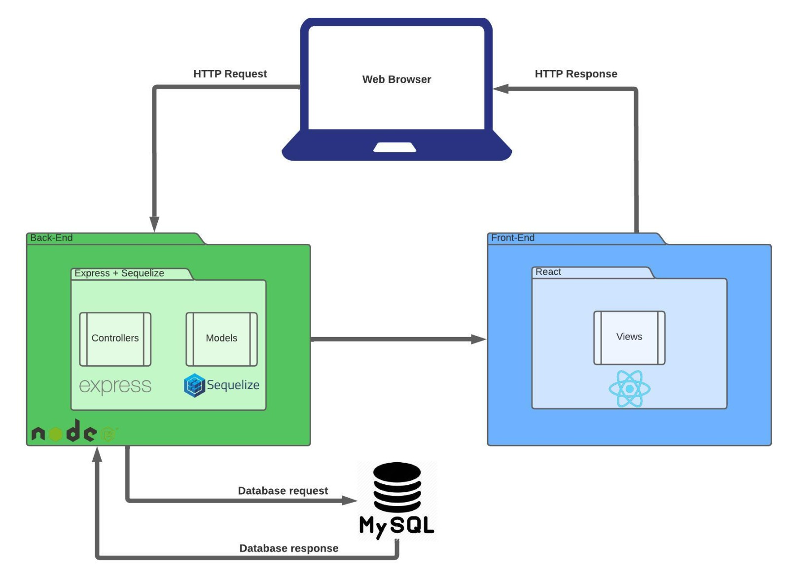

VISÃO DO PRODUTO E PROJETO
1. VISÃO GERAL DO PRODUTO
1.1 Problema
O problema se sustenta sobre a falta de meios organizados para realização de caronas solidárias, devido a diversos grupos e situações que podem acontecer quando os usuários (motoristas e passageiros) tentam encontrar caronas solidárias através desses meios. Para se entender melhor o problema, foi utilizada a técnica diagrama de ishikawa, também chamado de diagrama da espinha de peixe, com o auxílio da técnica 5 porquês para encontrar as causas raízes e seus principais motivadores. Assim, foram encontradas 4 causas raízes: Tempo do usuário, valor do produto, informação dos usuários e centralização das informações.

Figura 1 - Diagrama de Ishikawa do grupo (fonte: autores, 2023)
1.2 Declaração de Posição do Produto
| Para | Alunos da FGA |
|---|---|
| Quem | Precisa de carona solidária e não possui meios organizados para encontrá-la ou ofertá-la |
| O UniBuddy | É um sistema de organização de caronas solidárias |
| Que | Auxílio na organização de caronas solidárias, ofertando possibilidade de encontrar pessoas que ofereçam ou precisem receber a carona para determinado local |
| Ao contrário | Passe-livre, Grupos de carona no WhatsApp, Telegram ou afins |
| Nosso produto | Ofertará caronas solidárias acessíveis e organizadas |
1.3 Objetivos do Produto
O objetivo do UniBuddy é auxiliar, de forma organizada e prática, no encontro entre motoristas dispostos a oferecer carona solidária e passageiros que precisam recebê-las. Isso será feito através de uma aplicação que se nutre a partir dos dados dos usuários para disponibilizar informações úteis e organizadas para os interessados, facilitando o encontro de parceiros com o mesmo destino e de confiança.
1.4 Tecnologias a Serem Utilizadas
- Javascript
- HTML
- CSS
- React
- Node.js
- MySQL
2. VISÃO GERAL DO PROJETO
2.1 Organização do Projeto
| Papel | Atribuições | Responsável | Participantes |
|---|---|---|---|
| Pessoa Desenvolvedora | Codificar o produto, realizar refatoração, testar, configurar, versionar, evoluir, integrar, documentar, ata das reuniões, estratégia de código | Leonardo | João, Juan, Pedro Henrique, Pedro Lucas |
| Líder do Time | Delegar tarefas, duração da Ciclo, organização das atividades, one-to-one com os membros, estratégia de produto | Juan | Leonardo |
| Pessoa Engenheira de Requisitos | Descobrir, elicitar, analisar, consensuar, declarar, representar, organizar e atualizar requisitos | Pedro Lucas | João, Leonardo, Pedro Henrique, Juan |
| Cliente | Fornecer insumos para requisitos, fornecer feedbacks sobre os produtos, priorizar requisitos | Pedro Henrique | Victor Eduardo Araújo Ribeiro |
| Monitor | Verificar requisitos, fornecer feedbacks sobre o processo de ER, auxiliar em dúvidas da equipe acerca da disciplina de requisitos, articular os interesses do professor | Juan | Victor Cabral |
2.2 Planejamento das Fases do Projeto
| Ciclos | Produto (Entrega) | Data Início | Data Fim |
|---|---|---|---|
| Ciclo 1 | Requisitos descobertos, elicitados, analisados e consensuados | 02/05/23 | 08/05/23 |
| Ciclo 2 | Requisitos validados, verificados e declarados | 09/05/23 | 15/05/23 |
| Ciclo 3 | Requisitos organizados e atualizados, escopo MVP1 e MVP2 | 16/05/23 | 25/05/23 |
| Ciclo 4 | Backlog definitivo MVP1 | 26/05/23 | 05/06/23 |
| Ciclo 5 | US01 e US05 | 06/06/23 | 12/06/23 |
| Ciclo 6 | US11 e US12 | 13/06/23 | 22/06/23 |
| Ciclo 7 | US8 e US09 | 23/06/23 | 26/06/23 |
| Ciclo 8 | Backlog definitivo MVP2 | 27/06/23 | 03/07/23 |
| Ciclo 9 | US15, US10, US04, US03 | 04/07/23 | 10/07/23 |
| Ciclo 10 | US06, US02, US07, US14 | 11/07/23 | 18/07/23 |
2.3 Matriz de Comunicação
| Descrição | Área/Envolvidos | Periodicidade | Produtos Gerados |
|---|---|---|---|
| Acompanhamento Diário | Equipe do Projeto | Diário | Relato por parte dos membros da equipe no WhatsApp sobre o andamento individual das partes do projeto |
| Acompanhamento de Ciclo | Equipe do Projeto e Monitor | Semanal | Ata da Reunião, Relação de Feedbacks sobre as entregas do produto |
| Comunicar a situação do projeto | Equipe do Projeto e Professor | Mensalmente | Artefatos solicitados, Relação de Feedbacks do Professor |
2.4 Gerenciamento de Riscos
A análise e gerenciamento de riscos referem-se à identificação dos possíveis pontos que podem representar riscos para o projeto. Precisam ser acompanhados, a cada acompanhamento das fases, se referindo assim, ao projeto como um todo e não apenas ao produto.
Segundo Charette, existem três tipos de riscos de Software (PRESSMAN,2006):
- Riscos de projeto: mostram problemas potenciais de orçamento, cronograma, organizacionais que impactam o projeto;
- Riscos técnicos: perturbam a qualidade e a entrega do software. Também mostram problemas potenciais de projeto, implementação, interface, verificação e manutenção;
- Riscos de negócio: ameaçam a viabilidade do software e do produto e apresentam 5 variações:
- Risco de Mercado: criar um excelente produto ou sistema que ninguém realmente quer;
- Risco Estratégico: criar um produto que não se encaixe mais na estratégia geral de negócios da empresa;
- Risco de Vendas: criar um produto que a equipe de vendas não sabe como vender;
- Risco Gerencial: perda de suporte da alta gerência devido à mudança no foco ou mudança de profissionais;
- Risco de Orçamento: perda do orçamento ou do comprometimento dos profissionais.
Com isso, podemos avaliar o impacto causado pela consequência desses riscos, segundo a categoria e os componentes, como vemos na imagem abaixo.

Figura 2 - Avaliação de impacto (fonte: autores, 2023)
2.4.1 Histórico de Riscos
| Ciclo | Risco Encontrado | Categoria | Ação tomada |
|---|---|---|---|
| Ciclo 2 | Risco de Projeto | Crítico 2 | Planejamento de troca de Processos de Desenvolvimento e ER. |
| Ciclo 3 | Risco Técnicos | Crítico 2 | Conversa e feedbacks com a equipe, Alinhamento com o Cliente |
| Ciclo 4 | Risco de Projeto | Crítico 2 | Planejamento de novo cronograma, Alinhamento com o Cliente |
| Ciclo 6 | Risco Técnicos | Crítico 2 | Conversa e feedbacks com a equipe, Alinhamento com o Cliente |
2.5 Critérios de Replanejamento
Os critérios de replanejamento referem-se à identificação dos pontos que, caso ocorram, causarão um replanejamento do projeto. Precisam ser acompanhados a cada Ciclo, referindo-se assim, ao projeto como um todo e não apenas ao produto.
- Alteração nos prazos das entregas da Disciplina ou do Cliente
- Alteração das ferramentas do projeto
- Alteração no Processo de Engenharia de Requisitos ou Desenvolvimento de Software
- Alteração no Escopo do Projeto, a pedido do professor
- Atrasos de mais de 2 semanas nas entregas
- Barreiras externas para execução do projeto, tais como: aparatos legais, valor financeiro inacessível, capacidade dos hardwares dos desenvolvedores, etc
- Saída de algum membro da equipe
Os critérios de replanejamento do projeto devem ser acompanhados e atualizados a cada fase. E, aplicados, conforme necessidade.
2.5.1 Histórico de Replanejamento
| Ciclo | Problema | Solução Encontrada | Resultado Esperado |
|---|---|---|---|
| Ciclo 3 | Atrasos de mais de 2 semanas | Alterar cronograma do projeto | Adequação aos prazos solicitados |
| Ciclo 3 | Alteração no Processo de Engenharia de Requisito ou Desenvolvimento de Software | Alterar cronograma do projeto e entregas | Adequação aos prazos solicitados |
| Ciclo 4 | Atrasos de mais de 2 semanas | Alterar entregas das fases | Adequação aos prazos solicitados |
| Ciclo 7 | Alteração nos prazos das entregas da Disciplina | Alterar entregas das fases | Adequação aos prazos solicitados |
3. PROCESSO DE DESENVOLVIMENTO DE SOFTWARE
3.1 Metodologia
Baseado na proposta de Gupta (2019), foi respondido um conjunto de questões distintas sobre determinados tópicos para definir a abordagem que melhor se encaixa ao projeto e time. Tópicos norteadores:
- Requisitos
- Equipe de Desenvolvimento
- Usuários
- Tipo de Projeto e Riscos Associados
3.1.1 Requisitos
Figura 3 - Modelo Gupta para requisitos (fonte: Gupta, 2019)
| Pergunta | Nosso contexto |
|---|---|
| Os requisitos são fáceis de entender e definir? | Sim. |
| Nós mudamos os requisitos com bastante frequência? | Não. |
| Nós podemos definir os requisitos ao início de cada ciclo? | Sim. |
| Os requisitos estão indicando um sistema complexo para se construir? | Sim. |
Conclusão: Em termos de requisitos, temos o indicativo para o RAD e Desenvolvimento Evolutivo.
3.1.2 Equipe de Desenvolvimento

Figura 4 - Modelo Gupta para equipe de desenvolvimento (fonte: Gupta, 2019)
| Pergunta | Nosso contexto |
|---|---|
| Pouca experiência em projetos similares? | Sim. |
| Pouco conhecimento de domínio (novato na tecnologia)? | Não. |
| Pouca experiência com as ferramentas que serão usadas? | Sim. |
| Disponibilidade para treinamento, se necessário | Sim. |
Conclusão: Em termos de equipe de desenvolvimento, temos o indicativo para o Spiral e o RAD.
3.1.3 Usuários
Figura 5 - Modelo Gupta para usuários (fonte: Gupta, 2019)
| Pergunta | Nosso contexto |
|---|---|
| Usuário está envolvido em todas as fases? | Sim. |
| Participação limitada do usuário? | Não. |
| Usuário não tem experiência anterior em participação em projetos similares? | Não. |
| Usuário são especialistas no domínio do problema? | Sim. |
Conclusão: Em termos de usuário, temos o indicativo para o RAD e Protótipo
3.1.4 Tipo de Projeto e Risco Associado
Figura 6 - Modelo Gupta para tipo de projeto e risco associado (fonte: Gupta, 2019)
| Pergunta | Nosso contexto |
|---|---|
| O projeto é melhoria de um sistema existente? | Não. |
| O financiamento está estável para o projeto? | Sim. |
| Requisitos de alta confiabilidade? | Não. |
| Cronograma do projeto é apertado? | Sim. |
| Uso de componentes reutilizáveis? | Sim. |
| Os recursos (Tempo, dinheiro, pessoas etc) estão escassos? | Sim. |
Conclusão: Em termos de Tipo de Projeto e Risco Associado, temos o indicativo para o Protótipo e RAD
3.1.5 Escolha do Processo de Desenvolvimento de Software

Figura 7 - Procedimento do RAD (fonte: MARSICANO, 2023)
Considerando o foco principal no nosso usuário, a pouca experiência dos membros da equipe e o risco associado, além do cronograma da disciplina, entendemos que devemos utilizar uma abordagem híbrida, com uma abordagem dirigida a plano, com o método cascata, na fase de requisitos e com as fases seguintes, utilizando o método ágil de desenvolvimento RAD (Rapid Application Development) (SWEBOK, p. 170).
3.2 Ferramentas
Para a execução dessa metodologia, escolheu-se as seguintes Ferramentas de organização e controle da equipe:
- Gerenciamento de tarefas: GitHub Projects
- Comunicação: WhatsApp e Microsoft Teams
- Versionamento: GitHub
- Interface de Desenvolvimento: VSCode
- Desenvolvimento de ideias e frameworks da disciplina: Mural
- Prototipação: Figma
| Ferramenta | Finalidade |
|---|---|
| Versionamento e Gerenciamento de tarefas | |
| Comunicação | |
 |
Comunicação |
 |
Interface de Desenvolvimento |
 |
Desenvolvimento de ideias e frameworks da disciplina |
 |
Prototipação |
3.3 Processos e Procedimentos
3.3.1 Escolhas do Processo de Engenharia de Requisitos

Figura 8 - Faceta da engenharia de requisitos (fonte: MARSICANO, 2023)
Com base nas Facetas do Processo de ER (IREB, 2022), foi definido que é um processo de ER orientado a produto, visto que:
- Alvo é o mercado;
- O propósito é exploratório;
- Tempo é interativo.
3.3.2 Atividades do Processo de Engenharia de Requisitos

Figura 9 - Atividades da ER (fonte: MARSICANO, 2023).
Assim, incluímos as atividades de ER (MARSICANO, 2023) dentro dos procedimentos do processo de desenvolvimento de software RAD, pontuado no tópico 3.
3.3.3 ATIVIDADES RAD
A metodologia Rapid Application Development, também chamado de RAD é um processo incremental na qual desenvolvemos as atividades descritas na figura 10. A metodologia envolve desenvolver módulos que apresentam as fases de análise, design, codificação e testagem. Esses módulos são desenvolvidos por equipes específicas, de forma paralela, e isso é desenvolvido a partir dos requisitos que foram elicitados e modularizados na Ciclo. Assim, várias técnicas e ferramentas de desenvolvimento são utilizadas para o desenvolvimento desses módulos. A ideia é que ao integrar esses módulos, o produto final é testado e entregado.
Nosso grupo optou por utilizar um método híbrido que envolve o uso de cascata nos requisitos iniciais que elicitamos, enquanto que nas fases posteriores utilizaremos de abordagens ágeis e o processo do RAD como um todo. Com isso, vamos separar nossos 5 membros em dois times que vão estar trabalhando paralelamente em módulos diferentes.
Figura 10 - Modelo de trabalho do RAD (fonte: Software Engineering | Rapid application development model, 2023)
3.3.3.1 REQUISITOS E PLANEJAMENTO
3.3.3.1.1 DESCOBERTA E ELICITAÇÃO DE REQUISITOS
Fase focada em encontrar, extrair, obter ou provocar uma resposta, reação, informação dos usuários para construção dos requisitos (MARSICANO, 2023).
| Identificador | Atividade | Método | Ferramenta | Entrega |
|---|---|---|---|---|
| ELI-01 | Elicitação e Descoberta | Diagrama de causa e 5 porquês | Mural | Backlog de requisitos não validado |
3.3.3.1.2 ANALISE E CONSENSO DE REQUISITOS
Fase focada em analisar os requisitos brutos e conciliar os interesses dos stakeholders (MARSICANO, 2023).
| Identificador | Atividade | Método | Ferramenta | Entrega |
|---|---|---|---|---|
| AA-01 | Análise e Consenso | Análise de Viabilidade | Teams | Backlog de requisitos validados |
3.3.3.1.3 DECLARAÇÃO DE REQUISITOS
Fase focada em comunicar os requisitos para os interessados em diferentes níveis de glanularidade e dividindo entre funcionais e não funcionais (MARSICANO, 2023).
| Identificador | Atividade | Método | Ferramenta | Entrega |
|---|---|---|---|---|
| DEC-01 | Declaração | Temas, Epicos e User Stories | Mural | User Stories representadas |
3.3.3.1.4 VERIFICAÇÃO E VALIDAÇÃO DE REQUISITOS
Fase focada em manter os requisitos do produto estruturados, organizados e atualizados (MARSICANO, 2023).
| Identificador | Atividade | Método | Ferramenta | Entrega |
|---|---|---|---|---|
| GEREN-01 | Verificação e Validação | Feedback | Reunião | User Stories validadas |
3.3.3.1.5 GERENCIAMENTO DE REQUISITOS (ORGANIZAÇÃO E ATUALIZAÇÃO)
Fase focada em manter os requisitos do produto estruturados, organizados e atualizados (MARSICANO, 2023).
| Identificador | Atividade | Método | Ferramenta | Entrega |
|---|---|---|---|---|
| GEREN-01 | Organização e Atualização | MoSCoW | Mural e Excel | Definição de prioridades (MVP1 e MVP2) |
3.3.3.2 PROTOTIPAÇÃO E FEEDBACK
3.3.3.2.1 REPRESENTAÇÃO DE REQUISITOS (PROTÓTIPO)
Apresentação dos requisitos em modelos e/ou visualizações do produto (MARSICANO, 2023).
| Identificador | Atividade | Método | Ferramenta | Entrega |
|---|---|---|---|---|
| PRO-01 | Construção de prototipo de Baixa Fidelidade | Prototipagem | Figma | Prototipo de baixa fidelidade |
| PRO-02 | Construção de prototipo de Média Fidelidade | Prototipagem | Figma | Prototipo de média fidelidade |
| PRO-03 | Construção de prototipo de Alta Fidelidade | Prototipagem | Figma | Prototipo de alta fidelidade |
3.3.3.2.2 VALIDAÇÃO E VERIFICAÇÃO DE REQUISITOS (PROTÓTIPO)
Validação é confirmar ou não se os requisitos definem a solução correta conforme consensuado entre os stakeholders (MARSICANO, 2023). Enquanto verificação é garantir se os requisitos foram ou não executados na maneira correta (MARSICANO, 2023). Além disso, definir o preparado (DoR) e o pronto (DoD) também faz parte dessa fase.
| Identificador | Atividade | Método | Ferramenta | Entrega |
|---|---|---|---|---|
| VAP-01 | Coleta de Feedbacks sobre os protótipos | Feedback | Teams e Figma | Relação de feedbacks |
3.3.3.3 CONSTRUÇÃO
3.3.3.3.1 CONSTRUÇÃO MÓDULOS
| Identificador | Atividade | Método | Ferramenta | Entrega |
|---|---|---|---|---|
| CM-01 | Desenvolvimento da Aplicação | PairProgramming | VSCODE, GitHub, Navegador | Módulo Unitário |
3.3.3.3.1 VALIDAÇÃO MÓDULOS
| Identificador | Atividade | Método | Ferramenta | Entrega |
|---|---|---|---|---|
| VAM-01 | Atividade de Validação dos Módulos | Feedback | Teams e Navegador | Relação de Feedbacks |
3.3.3.4 CUTOVER
3.3.3.4.1 INTEGRAÇÃO MÓDULOS
| Identificador | Atividade | Método | Ferramenta | Entrega |
|---|---|---|---|---|
| IT-01 | Integração de Módulos | União de Módulos | GitHub, VSCODE e Navegador | MVP |
3.3.3.4.2 TESTE PRODUTO
| Identificador | Atividade | Método | Ferramenta | Entrega |
|---|---|---|---|---|
| TP-01 | Testagem do Produto | Teste Manual, Teste de Módulo, Teste de Integração, Teste de Sistema, Teste de Aceitação | VSCODE, GitHub | Relatório de Testes |
3.4 Arquitetura do Projeto

4. LIÇÕES APRENDIDAS
Unidade 1
Com base nos feedbacks recebidos, podemos extrair algumas lições aprendidas importantes no projeto. Primeiramente, é notável que a interação entre os membros do grupo está positiva e a comunicação está fluindo bem, o que pode ser atribuído ao fato de que o grupo está unido como um time e está passando feedbacks constantes. Além disso, o grupo está sendo proativo nas entregas e as tarefas estão bem divididas, o que demonstra organização e alinhamento, principalmente em momentos de necessidade.
Por outro lado, os feedbacks construtivos indicam que o grupo precisa melhorar em alguns aspectos, como a qualidade das atividades entregues, divisão equilibrada das responsabilidades entre os membros e organização da comunicação. Em relação à qualidade das entregas, o feedback construtivo recebido trás como medida sugestiva uma revisão mais criteriosa antes da entrega. Em seguida, é necessário repensar a forma como as atividades são divididas de modo a permitir que todos os membros do grupo produzam efetivamente. Além disso, a comunicação precisa ser mais organizada para evitar a mistura de informações importantes e irrelevantes simultaneamente.
Sendo assim, é essencial que todos os membros do grupo estejam acompanhando bem as atividades e assumindo responsabilidades equilibradas, além de cada membro ter um papel claro dentro do grupo e que esteja engajado em acompanhar as atividades propostas, garantindo que não haja atrasos ou sobrecarga de responsabilidades em alguns membros. Como resultado, espera-se que após uma gestão de equipe eficiente e equilibrada, teremos uma maior efetividade do projeto. Além disso, aprendemos em sala de aula sobre processos, ciclos de vida e abordagens de software sob a perspectiva de Engenharia de Requisitos e também sobre as Atividades de Engenharia de Requisitos (MARSICANO, 2023), facetas de Engenharia de Requisitos (IREB, 2022).
Por fim, nas atividades práticas, aprendemos como analisar um problema e suas causas para depois pensar sobre uma possível solução que irá resolver ou minimizar esse problema, propondo assim o objetivo da nossa aplicação, além de aprendermos sobre quais critérios devemos observar para selecionar nossa abordagem de desenvolvimento (GUPTA), para que nos possemos planejar as Atividades de Engenharia de Requisitos (MARSICANO, 2023).
Unidade 2
Na unidade 2 realizamos as Atividades de Engenharia de Requisitos (MARSICANO, 2023) que havíamos planejado, com alguns percalços no caminho que nos levaram a replanejar nosso cronograma e alterar a abordagem de desenvolvimento. Dentro das atividades de requisitos, iniciamos pela Elicitação e Descoberta, através de conversa com inteligência artificial (ChatGPT) e representantes dos usuários. Com isso, conseguimos criar uma listagem dos requisitos funcionais e não funcionais na qual conseguimos materializar os desejos e necessidades dos representantes. Seguimos com a Análise e Consenso através de negociações e análises, tendo discussões entre o time e com revisões do monitor. Com isso, prosseguimos para a Declaração e a fizemos através de Temas, Épicos e User Stories. Posteriormente fizemos a Verificação e Validação através de revisão em pares e feedbacks, além do uso do INVEST por meio da equipe GameKingdom, onde pudemos entender de uma forma mais concisa como nossos requisitos poderiam melhorar. Por fim, fizemos a Organização e Atualização através da técnica MoSCoW, onde avaliamos os critérios da técnica entre o time por meio de votação, onde tínhamos 5 pontos para valor de negócio, viabilidade e complexidade, assim conseguimos de uma maneira menos subjetiva (e mais objetiva), definir nossos MVP1 e MVP2.
Portanto, com base no descrito acima, podemos dizer que aprendemos todo o processo de definição dos requisitos, de uma maneira objetiva, organizada e concisa, mesmo com diversas discordâncias e erros ao longo do processo, o que nos levou a mais aprendizados enquanto equipe. Em seguida, também aprendemos que muitas vezes pode ser necessário readaptar o cronograma e até mesmo a abordagem do processo de desenvolvimento, a depender do contexto. Ainda sim, temos que fazer alinhamentos constantes e validações com os representantes, o professor e os monitores para ter o melhor proveito da disciplina. Por fim, aprendemos que MVP1 e MVP2 são produtos que geram valor para o cliente, mesmo que limitados, mas que trazem a oportunidade do cliente experimentar e entender o diferencial do produto. Em razão disso, torna-se uma das fases mais estratégicas de um produto, onde o usuário pode decidir comprar ou descartar a ideia.
Unidade 3
Na unidade 3 realizamos os conhecimentos teóricos adquiridos nas unidades anteriores para aplicar em cima de técnicas e ferramentas específicas de organização e priorização de requisitos, como Canvas PBB (Product Backlog Building), BDD (Behavior Driven Development), COORG (Classificar, Ordenar e Organizar), SAFe Backlog, etc. Como resultado, tivemos o desenvolvimento de um novo backlog do zero, com fins para a disciplina, a partir do Canvas PBB, que usamos o BDD e COORG para nos guiar na construção, assim como também tivemos atualização do nosso backlog, com fins para o projeto, com o SAFe Backlog. Por fim, utilizamos a inteligência artificial generativa ChatGPT, que já havia sido usada anteriormente, para nos auxiliar nas tarefas manuais e na ideação conforme pressupunha as técnicas.
Além do supracitado, aprendemos a utilizar ferramentas de organização de projetos como o GitHub Projects, com quadro Kanban, Microsoft Teams e WhatsApp para garantir que todos do grupo estivessem desenvolvendo e que pudéssemos acompanhar o progresso de cada um. Por sua vez, a comunicação se fez presente em todas essas fases, mostrando sua importância para a harmonia do grupo, assim como a resolução de conflitos e maturação dos membros, por meio de feedbacks e reuniões de alinhamento individuais (one-one) e coletivas.
Em conclusão, maturamos nosso processo de ER, utilizando técnicas de Organização, Priorização, Atualização entre outras, para garantir um backlog cada vez mais viável e tangível. Assim, também garantimos um bom convívio e produção dos membros da equipe, para um ambiente eficiente e produtivo.
Unidade 4
Na unidade 4 tivemos a chance de aprender frameworks que trabalham a engenharia de requisitos. Um dos frameworks que tivemos a chance de aprender foi o de Declarações com Casos de Uso. Nesse contexto, nos familiarizamos com o Diagrama de Casos de Uso, uma poderosa ferramenta que nos permite visualizar de forma clara as interações entre os atores (usuários) e o sistema em questão. Compreendemos como identificar os atores relevantes, descrever seus papéis e responsabilidades, além de mapear os casos de uso e suas relações. Além disso, também aprofundamos nosso conhecimento na elaboração de especificações de casos de uso. Aprendemos a descrever de forma detalhada as ações, os pré e pós-condições, além das principais sequências de eventos envolvidas em cada caso de uso. Essa prática nos permite uma compreensão mais precisa dos requisitos funcionais do sistema e facilita a comunicação entre os membros da equipe de desenvolvimento.
Outro framework abordado foi o User Story Mapping, uma técnica ágil que nos auxilia na criação de um plano estruturado para o desenvolvimento do software. Com o User Story Mapping, aprendemos a construir um mapa visual que organiza as funcionalidades do sistema de acordo com o valor que entregam ao usuário. Dessa forma, é possível ter uma visão clara das histórias de usuário, suas prioridades e interdependências, facilitando o planejamento e a tomada de decisões durante o desenvolvimento.
Além dos frameworks, também tivemos a oportunidade de receber feedbacks professor em relação ao Canvas PBB e realizamos as alterações necessárias no Behavior-Driven Development (BDD). Essa prática nos ensinou a importância da comunicação clara e eficiente, tanto com a equipe de desenvolvimento quanto com os stakeholders do projeto, a fim de garantir que as expectativas sejam atendidas e que o software final seja de qualidade.
No decorrer dessa jornada, aprendemos que a engenharia de requisitos é fundamental para o sucesso de um projeto de software. Os frameworks estudados nos proporcionaram uma base sólida para identificar, documentar e comunicar os requisitos de forma eficaz. Através do Diagrama de Casos de Uso, das especificações de casos de uso e do User Story Mapping, conseguimos visualizar e compreender melhor as necessidades dos usuários, possibilitando um desenvolvimento mais assertivo e alinhado às expectativas. Ademais, a experiência de receber feedbacks e realizar as adaptações necessárias no Canvas PBB e no BDD nos mostrou a importância da flexibilidade e da adaptação durante o processo de desenvolvimento. Estar aberto a ajustes e melhorias contínuas é essencial para atendermos às mudanças e às evoluções que surgem ao longo do projeto.
Em resumo, aprendemos com a engenharia de requisitos durante todo as unidades sobre o quão importante ela é para guiar no processo de construção de um software e percebemos que a comunicação entra como elemento chave para o sucesso da engenharia de requisitos e, consequentemente, para o desenvolvimento de um produto viável e que atenda as necessidades do cliente.
5. A MELHORAR
Unidade 1
- Lições Aprendidas;
- Planejamento das Ciclos;
- Critérios de riscos;
- Critérios de replanejamento;
- Processos e atividade de Requisitos;
Unidade 2
- Inserir introdução no Backlog do Produto;
- Algumas User Stories possuem problemas na escrita e/ou estrutura;
- Algumas User Stories são Requisitos Não-Funcionais. Não devem ser USs.
Unidade 3
- BDD muito genérico;
- Site não está funcionando, ou seja, MVP1 não foi considerado entregue.
6. Referência Bibliográficas
- MARSICANO, George. Slides: Escolhas da Engenharia de Software. 2023. Disponível em: https://aprender3.unb.br/pluginfile.php/2518488/mod_folder/content/0/Unidade%201%20-%20Aula%20-%20Escolhas%20da%20ESW.pdf
- Raja Gupta. Fundamentals of Software Engineering. Engineering Handbook. 2019
- IEEE. SWEBOK. Version 3. 2014.
- Handbook IREB CPRE Foundation Level, Version 1.1.0, september 2022.
- MARSICANO, George. Slides: Introdução a Engenharia de Requisitos. 2023. Disponível em: https://aprender3.unb.br/pluginfile.php/2518489/mod_folder/content/0/Unidade%201%20-%20Aula%20-%20Introducao%20a%20ER.pdf
- Software Engineering | Rapid application development model, 2023. Disponível em https://www.geeksforgeeks.org/software-engineering-rapid-application-development-model-rad/ Acesso em 24 de maio de 2023.
7. Historico de Versão
| Data | Versão | Descrição | Autor | Revisores |
|---|---|---|---|---|
| 24/04/23 | 0.1 | Criação do documento | Juan | Pedro Henrique |
| 25/04/23 | 0.2 | Evolução do documento | Juan | Pedro Henrique |
| 26/04/23 | 0.3 | Correções do documento | Juan | Pedro Henrique |
| 26/04/23 | 0.4 | Correções do documento | Juan | João |
| 26/04/23 | 1.0 | Primeira versão de entrega | Juan | João, Juan, Leonardo, Pedro Henrique, Pedro Lucas |
| 27/04/23 | 1.1 | Inclusão lições aprendidas | Juan | Pedro Lucas |
| 19/05/23 | 1.2 | Correção do Planejamento do projeto, das fases e da matriz de comunicação | Juan | João |
| 22/05/23 | 1.3 | Inserção de detalhes na matriz de comunicação, revisão da análise de risco e critérios de replanejamento | Juan | João |
| 24/05/23 | 1.4 | Correção do Planejamento do projeto, da abordagem de desenvolvimneto, das entregas, e da matriz de comunicação, inclusão de item no histórico de replanejamento | Juan | João |
| 25/05/23 | 2.0 | Segunda versão de entrega | Juan, João, Pedro Henrique, Pedro Lucas | João |
| 17/06/23 | 2.1 | Correção do Planejamento do projeto, Histórico de Riscos, Histórico de Replanejamento, Lições aprendidas, Pontos de melhoria | Juan | João e Pedro Henrique |
| 22/06/23 | 2.2 | Correção do Planejamento do projeto, Histórico de Replanejamento | Juan | João e Pedro Henrique |
| 27/06/23 | 2.2 | Correção do Planejamento do projeto e Histórico de Riscos | Juan | João e Pedro Henrique |
| 11/07/23 | 3.1 | Atualização Planejamento | Juan | Pedro Henrique |